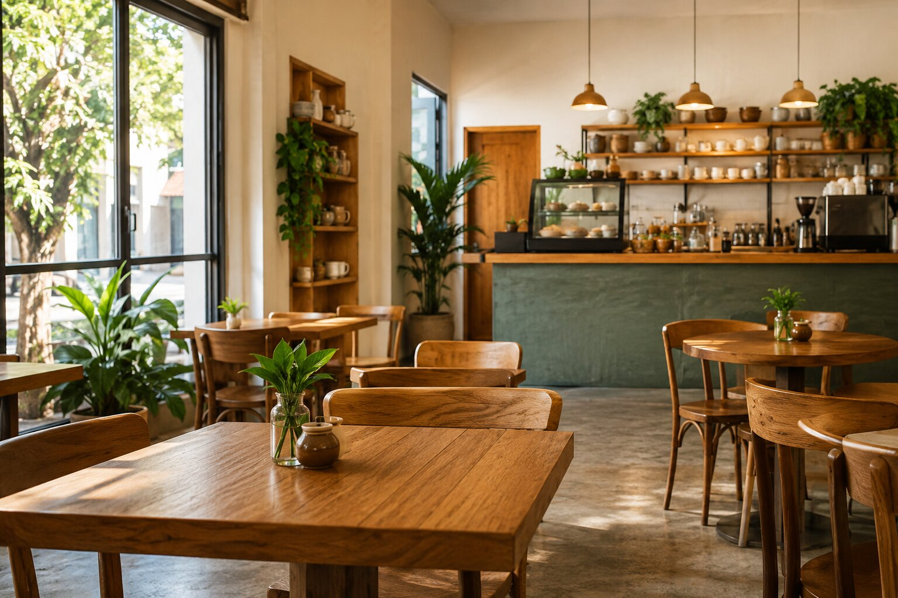

Fundamentos da Web, primeiro experimento e preparação do projeto.
Uma situação real para começar
O Café Aurora é um pequeno café de bairro. Hoje, informações como endereço, horário e produtos aparecem apenas em publicações de redes sociais e acabam se perdendo.
A proprietária quer um lugar simples e confiável onde qualquer pessoa possa conhecer o café. Antes de pensar em cores ou animações, precisamos responder: o que é um site, quais arquivos o formam e como o navegador consegue mostrá-los?
O que você vai aprender
Diferenciar Internet, Web, site e página.
Entender o papel do navegador, do servidor e do endereço.
Fazer um primeiro experimento com HTML.
Criar e abrir uma pasta de projeto no VS Code.
Criar o arquivo index.html com a estrutura mínima correta.
Visualizar, alterar e salvar a primeira página do Café Aurora.
Aula 1 — Como a Web funciona
Internet
É a infraestrutura que conecta computadores e redes ao redor do mundo.
Web
É um dos serviços que usa a Internet para disponibilizar páginas interligadas.
Site
É um conjunto organizado de páginas e recursos relacionados.
Página
É um documento individual que o navegador interpreta e apresenta.
As três tecnologias que encontraremos
HTML: organiza e dá significado ao conteúdo.
CSS: cuida da apresentação visual e do layout.
JavaScript: acrescenta comportamento e interação.
Neste começo, nosso foco será o HTML. Assim, cada tecnologia entra quando surge uma necessidade real no projeto.
O caminho de uma página
Você digita um endereço
↓
O navegador faz uma solicitação
↓
O servidor envia os arquivos
↓
O navegador interpreta e exibe a página
Pratique
Abra três sites que você usa. Em cada um, identifique o endereço, o navegador utilizado e pelo menos duas páginas diferentes do mesmo site.
Aula 2 — Seu primeiro contato com HTML
Antes de organizar um projeto completo, vamos experimentar duas marcações no Playground da MDN. Ele permite alterar um pequeno exemplo e observar o resultado imediatamente.
<h1>Café Aurora</h1>
<p>Café, encontros e bons momentos no coração do bairro.</p>
As marcações <h1> e <p> são chamadas de tags. A primeira indica o título principal; a segunda, um parágrafo. A maior parte dos elementos possui uma tag de abertura, conteúdo e uma tag de fechamento.
Experimente
Troque o nome do café pelo nome de outro pequeno negócio.
Altere a frase do parágrafo.
Apague apenas uma tag de fechamento e observe o que acontece. Depois, corrija.
Por que não faremos todo o site aqui?
Esse ambiente é excelente para testar trechos curtos. Um site real precisa de pasta própria, documento completo, imagens, várias páginas e arquivos separados. Por isso, agora passaremos ao ambiente principal do projeto.
Aula 3 — Preparando o projeto no VS Code
Instale o VS Code para Windows. Em computador compartilhado, siga a orientação do professor antes de instalar.
Crie uma pasta chamada cafe-aurora.
No VS Code, use Arquivo → Abrir Pasta e selecione essa pasta.
Um nome simples evita problemas.
Em nomes de arquivos e pastas para a Web, prefira letras minúsculas, sem espaços e sem acentos. Quando precisar separar palavras, use hífen: cafe-aurora.
No painel lateral do VS Code, crie o arquivo index.html. O nome index é tradicionalmente usado para a página inicial de uma pasta ou de um site.
Pasta aberta não é arquivo aberto.
A pasta representa o projeto inteiro. Dentro dela ficarão os documentos, imagens, estilos e scripts que construiremos nos próximos capítulos.
Aula 4 — O primeiro documento completo
Digite no arquivo index.html:
<!DOCTYPE html>
<html lang="pt-BR">
<head>
<meta charset="UTF-8">
<meta name="viewport" content="width=device-width, initial-scale=1.0">
<title>Café Aurora</title>
</head>
<body>
<h1>Café Aurora</h1>
<p>Café, encontros e bons momentos no coração do bairro.</p>
</body>
</html>
Trecho
Função
<!DOCTYPE html>
Informa que o documento usa o HTML atual.
<html lang="pt-BR">
É o elemento principal e informa o idioma da página.
<head>
Reúne configurações e informações sobre o documento.
charset
Permite exibir corretamente acentos e outros caracteres.
viewport
Prepara a página para diferentes larguras de tela.
<title>
Define o texto mostrado na aba do navegador.
<body>
Contém o que será apresentado na página.
Visualizando a página
No painel de extensões do VS Code, procure Live Preview e confirme que o publicador é Microsoft. A página oficial da extensão está no Visual Studio Marketplace. Depois de instalada, use a opção de visualização para abrir seu arquivo.
Visualização local não é publicação.
Neste momento, a página funciona apenas no seu computador. Colocar o site na Internet será uma etapa posterior do projeto.
Experimente
Troque o texto de <title> e observe a aba.
Altere o conteúdo de <h1> e <p>.
Salve o arquivo e recarregue a visualização, se necessário.
Erros comuns
Salvar como index.html.txt.
Criar o arquivo fora da pasta cafe-aurora.
Esquecer o fechamento de uma tag.
Alterar o arquivo e não salvá-lo antes de verificar o resultado.
Digitar conteúdo visível fora do elemento <body>.
Prática aplicada
Antes de </body>, acrescente:
<h2>Uma pausa especial no seu dia</h2>
<p>Conheça cafés selecionados, receitas artesanais e um ambiente acolhedor.</p>
Desafio: reescreva o parágrafo como se você estivesse recebendo uma pessoa que nunca visitou o Café Aurora.
Verifique sua aprendizagem
Consigo explicar a diferença entre Internet, Web, site e página.
Sei qual é o papel do navegador e do servidor.
Criei e abri corretamente a pasta do projeto.
Meu arquivo se chama index.html.
A página possui a estrutura mínima e abre no navegador.
Consigo alterar um texto, salvar e visualizar o resultado.
Até aqui
Temos um primeiro documento correto e funcional. Ainda não usamos cores, imagens, menus, CSS ou JavaScript. A página ganhará conteúdo e estrutura antes de receber a identidade visual.
Web I • 8 horas
Capítulo 2 — Construindo a página inicial
Conteúdo, hierarquia, listas, links, imagens e informações do documento.
O que a página precisa comunicar?
A primeira versão abre no navegador, mas ainda não responde às perguntas de quem visita o Café Aurora: o que ele oferece, quais são seus diferenciais, em que horário funciona e por que vale a pena conhecê-lo?
Neste capítulo, construiremos uma página inicial bem organizada. Ela ainda será simples visualmente, porque primeiro o conteúdo precisa estar correto e compreensível.
O que você vai aprender
Reconhecer elementos, tags, conteúdo e atributos.
Organizar títulos e subtítulos em uma hierarquia coerente.
Usar parágrafos, ênfase, listas e comentários.
Criar links internos e externos e entender caminhos relativos.
Inserir imagens com texto alternativo e dimensões.
Alguns elementos recebem atributos, informações adicionais escritas na tag de abertura. Em <html lang="pt-BR">, por exemplo, lang informa o idioma do documento.
Títulos formam uma hierarquia
O HTML oferece títulos de <h1> a <h6>. Eles não devem ser escolhidos pelo tamanho visual, mas pelo nível de cada assunto.
<h1>: assunto principal da página.
<h2>: grandes seções desse assunto.
<h3>: subdivisões de uma seção.
<h1>Café Aurora</h1>
<h2>Destaques da casa</h2>
<h3>Café coado</h3>
<p>Grãos selecionados e preparo cuidadoso.</p>
<h3>Pães artesanais</h3>
<p>Produção diária com ingredientes frescos.</p>
Aparência vem depois.
Não pule de <h1> para <h4> apenas porque o tamanho parece melhor. O CSS será usado mais adiante para controlar a aparência.
Aula 2 — Textos, listas e comentários
Use <strong> quando uma informação tiver forte importância e <em> para dar ênfase ao trecho.
<p><strong>Aberto de segunda a sábado.</strong></p>
<p>Um espaço <em>acolhedor</em> para sua pausa.</p>
Listas não ordenadas
Use <ul> quando a ordem dos itens não altera o sentido:
<ol>
<li>Escolha seu café</li>
<li>Selecione um acompanhamento</li>
<li>Faça seu pedido no balcão</li>
</ol>
Comentários no código
<!-- Esta seção será ampliada quando o cardápio estiver pronto. -->
Comentários ajudam a registrar decisões para quem edita o arquivo e não aparecem na página. Mesmo assim, fazem parte do código enviado ao navegador: nunca coloque senhas, dados pessoais ou informações secretas neles.
Pratique
Transforme o texto abaixo em uma lista HTML adequada: “Wi-Fi, tomadas disponíveis, ambiente climatizado e espaço para bicicletas”. Explique por que escolheu <ul> ou <ol>.
Aula 3 — Links e caminhos
Um link é criado com o elemento <a>. O atributo href informa o destino.
O valor após # deve ser igual ao id do elemento de destino. Cada id deve ser único na página.
Endereço absoluto
Um endereço absoluto contém o destino completo e costuma apontar para outro site:
<a href="https://developer.mozilla.org/pt-BR/">Consultar a MDN</a>
Caminho relativo
Um caminho relativo parte da localização do arquivo atual. Quando criarmos uma segunda página na mesma pasta, o link poderá ser:
<a href="cardapio.html">Ver cardápio</a>
Não crie um destino inexistente.
Esse link só deverá entrar no projeto quando o arquivo cardapio.html existir. Assim evitamos uma navegação quebrada.
Link e botão têm funções diferentes.
Use links para navegar até outro local ou documento. Botões serão usados para executar ações, principalmente quando começarmos o JavaScript. Evite href="#" como destino improvisado.
Pratique
Crie um link próximo ao início da página que leve até uma seção com id="destaques". Teste o link e confirme se o endereço do navegador passou a terminar em #destaques.
Aula 4 — Imagens e informações da página
Dentro da pasta cafe-aurora, crie uma pasta chamada img. Para realizar a atividade sem precisar procurar uma foto, você pode baixar a imagem preparada para o Café Aurora.
Imagem pronta para a atividade

Imagem didática criada especificamente para o projeto fictício Café Aurora.
Em um projeto real, você também poderá usar uma foto produzida por você, fornecida pelo responsável do negócio ou obtida com autorização de uso. Renomeie o arquivo de modo descritivo antes de colocá-lo na pasta.
<img
src="img/ambiente-cafe.jpg"
alt="Salão do Café Aurora com mesas de madeira e plantas"
width="1200"
height="800"
>
src indica onde o arquivo está.
alt comunica o conteúdo ou a função da imagem a quem não consegue vê-la.
width e height informam suas proporções e ajudam o navegador a reservar o espaço correto.
Um bom texto alternativo depende do contexto.
Descreva o que é importante para compreender a página, sem começar por “imagem de”. Se a imagem for apenas decorativa e não comunicar nada, use alt="".
Imagem com legenda
<figure>
<img
src="img/ambiente-cafe.jpg"
alt="Salão do Café Aurora com mesas de madeira e plantas"
width="1200"
height="800"
>
<figcaption>Um espaço tranquilo para conversar, estudar ou trabalhar.</figcaption>
</figure>
Título e descrição do documento
Dentro de <head>, atualize:
<title>Café Aurora — Café e produtos artesanais no bairro</title>
<meta
name="description"
content="Conheça o Café Aurora, seus cafés especiais, produtos artesanais, ambiente e horário de atendimento."
>
O título identifica a página na aba e em outros contextos. A descrição resume o conteúdo para mecanismos de busca e compartilhamentos, embora sua exibição não seja garantida.
Versão consolidada da página
Compare seu arquivo com esta versão. Não copie apenas por copiar: identifique a função de cada elemento.
<!DOCTYPE html>
<html lang="pt-BR">
<head>
<meta charset="UTF-8">
<meta name="viewport" content="width=device-width, initial-scale=1.0">
<meta
name="description"
content="Conheça o Café Aurora, seus cafés especiais, produtos artesanais, ambiente e horário de atendimento."
>
<title>Café Aurora — Café e produtos artesanais no bairro</title>
</head>
<body>
<h1>Café Aurora</h1>
<p>Café, encontros e bons momentos no coração do bairro.</p>
<a href="#destaques">Conheça nossos destaques</a>
<h2 id="destaques">Destaques da casa</h2>
<h3>Café coado</h3>
<p>Grãos selecionados e preparo cuidadoso.</p>
<h3>Pães artesanais</h3>
<p>Produção diária com ingredientes frescos.</p>
<h2>Nossos diferenciais</h2>
<ul>
<li>Cafés especiais</li>
<li>Pães artesanais</li>
<li>Opções vegetarianas</li>
<li>Wi-Fi e tomadas disponíveis</li>
</ul>
<figure>
<img
src="img/ambiente-cafe.jpg"
alt="Salão do Café Aurora com mesas de madeira e plantas"
width="1200"
height="800"
>
<figcaption>Um espaço tranquilo para conversar, estudar ou trabalhar.</figcaption>
</figure>
<h2>Horário de atendimento</h2>
<p><strong>De segunda a sábado, das 8h às 19h.</strong></p>
</body>
</html>
Erros comuns para revisar
Escolher títulos pelo tamanho visual e quebrar a hierarquia.
Usar listas apenas para produzir recuos.
Repetir o mesmo id em vários elementos.
Criar um link para um arquivo que ainda não existe.
Usar caminho local do computador, como C:\Fotos\..., no atributo src.
Esquecer o alt ou escrever uma descrição que não ajuda.
Usar imagens muito grandes sem necessidade ou sem autorização.
Projeto aplicado — entrega do capítulo
Complete a página inicial do Café Aurora com:
um título principal e uma frase de apresentação;
pelo menos duas seções com hierarquia correta;
uma lista adequada ao conteúdo;
um link interno funcionando;
uma imagem autorizada, com nome organizado, texto alternativo e dimensões;
título de aba e descrição coerentes com a página.
Depois, peça a um colega que navegue pela página sem explicar o código. Registre uma informação que ele encontrou facilmente e uma que precisou procurar.
Verifique sua aprendizagem
Consigo explicar o que são elemento, tag, conteúdo e atributo.
Meus títulos representam a organização do conteúdo.
Sei decidir entre lista ordenada e não ordenada.
Meus links têm destinos reais e funcionam.
Sei construir um caminho relativo para uma imagem.
A imagem possui texto alternativo útil e dimensões informadas.
A página comunica o que o Café Aurora oferece.
Até aqui
A página já tem conteúdo significativo e navegação interna, mas sua aparência ainda é simples. HTML organiza o conteúdo; CSS cuidará do visual; JavaScript acrescentará comportamentos. No próximo capítulo, criaremos outras páginas e uma navegação estruturada.
Web I • 8 horas
Capítulo 3 — Organizando o site em páginas
Planejamento, HTML semântico, múltiplas páginas e navegação consistente.
Quando uma página já não é suficiente
A página inicial do Café Aurora passou a reunir apresentação, produtos, história, endereço e horários. O conteúdo existe, mas diferentes visitantes precisam procurar demais para encontrar o que desejam.
Uma pessoa pode querer consultar o cardápio; outra, conhecer a origem do café; outra precisa apenas do endereço. A solução não é continuar alongando a página: vamos organizar essas informações em páginas conectadas por um menu.
O que você vai aprender
Planejar as páginas antes de começar a programá-las.
Organizar arquivos e imagens em uma estrutura previsível.
Usar header, nav, main, section, article e footer.
Reconhecer quando um agrupamento genérico com div é adequado.
Criar páginas diferentes com títulos e descrições próprios.
Construir um menu consistente usando caminhos relativos.
Testar a navegação e corrigir links quebrados.
Aula 1 — Planejando antes de programar
Antes de criar arquivos, organize as informações de acordo com as necessidades de quem visitará o site. Para o Café Aurora, quatro páginas resolvem o problema sem fragmentar demais o conteúdo:
Página
Necessidade atendida
Arquivo
Início
Entender rapidamente o que é o Café Aurora.
index.html
Cardápio
Conhecer produtos e destaques da casa.
cardapio.html
Sobre
Conhecer a história e a proposta do negócio.
sobre.html
Contato
Encontrar endereço, horários e formas de contato.
contato.html
Mapa do site
Café Aurora
├── Início
├── Cardápio
├── Sobre
└── Contato
Esse desenho simples é um mapa do site. Ele mostra quais páginas existirão e como o conteúdo foi dividido. Neste projeto, todas poderão ser acessadas pelo menu principal.
No explorador do VS Code, crie cardapio.html, sobre.html e contato.html na mesma pasta de index.html.
Cada página é um documento completo.
Todos os arquivos precisam de DOCTYPE, html, head e body. Copiar a estrutura correta economiza tempo, mas o título, a descrição e o conteúdo devem ser adaptados para cada página.
Título e descrição de cada página
Arquivo
title
Resumo da descrição
index.html
Café Aurora — Café e produtos artesanais no bairro
Apresentação geral do café.
cardapio.html
Cardápio — Café Aurora
Cafés e produtos artesanais.
sobre.html
Sobre — Café Aurora
História e proposta do negócio.
contato.html
Contato — Café Aurora
Endereço, horários e contato.
Pratique
Para cada página, escreva em uma frase o que o visitante espera encontrar. Se uma informação não se encaixar claramente em nenhuma delas, decida se está faltando uma página ou se o conteúdo não é necessário.
Aula 2 — Dando significado à estrutura
Até agora, usamos títulos, parágrafos, listas, links e imagens. O HTML também possui elementos que identificam as grandes regiões de uma página. Eles ajudam navegadores, mecanismos de busca, tecnologias assistivas e outros desenvolvedores a compreender a organização do documento.
Elemento
Quando usar
<header>
Conteúdo introdutório, como identificação do site e navegação inicial.
<nav>
Conjunto importante de links de navegação.
<main>
Conteúdo principal e exclusivo daquela página. Normalmente há apenas um por documento.
<section>
Grupo temático de conteúdo, geralmente identificado por um título.
<article>
Conteúdo que pode ser entendido como uma unidade independente, como um produto ou notícia.
<footer>
Informações finais, como autoria, direitos ou contato complementar.
<div>
Agrupamento sem significado próprio, útil quando nenhum elemento semântico descreve o conjunto.
Semântica não significa aparência.
Trocar uma div por header não deixa a página automaticamente mais bonita. Esses elementos explicam o papel do conteúdo; o visual será construído com CSS.
Nova estrutura da página inicial
No index.html, mantenha o head construído no capítulo anterior e reorganize o body:
Cada produto foi colocado em article porque forma uma unidade que pode ser compreendida separadamente.
O atributo loading="lazy" permite que o navegador adie o carregamento de imagens que ainda estão longe da área visível.
Os valores são fictícios e servem apenas para contextualizar o exercício.
Experimente
Abra index.html, acesse o Cardápio pelo menu e retorne ao Início. Depois, acesse diretamente cardapio.html pelo explorador do VS Code e confirme se as três imagens aparecem.
Aula 4 — Sobre, contato e navegação consistente
As páginas restantes aproveitarão a mesma estrutura. Copie cardapio.html, preserve cabeçalho, menu e rodapé, e substitua o main, o title e a descrição.
Conteúdo principal de sobre.html
<main>
<h1>Sobre o Café Aurora</h1>
<section aria-labelledby="nossa-historia">
<h2 id="nossa-historia">Nossa história</h2>
<p>O Café Aurora nasceu do desejo de criar um ponto de encontro
acolhedor para as pessoas do bairro.</p>
<p>Valorizamos o preparo cuidadoso, os ingredientes frescos e o
atendimento próximo.</p>
</section>
<section aria-labelledby="nosso-espaco">
<h2 id="nosso-espaco">Nosso espaço</h2>
<figure>
<img
src="img/ambiente-cafe.jpg"
alt="Salão do Café Aurora com mesas de madeira e plantas"
width="1536"
height="1024"
loading="lazy"
>
<figcaption>Um ambiente tranquilo no coração do bairro.</figcaption>
</figure>
</section>
</main>
No menu de sobre.html, retire aria-current do link anterior e coloque-o no link Sobre:
<main>
<h1>Contato e localização</h1>
<section aria-labelledby="onde-estamos">
<h2 id="onde-estamos">Onde estamos</h2>
<address>
<p>Rua das Flores, 123 — Centro</p>
<p>Telefone: (11) 0000-0000</p>
<p>E-mail: contato@cafeaurora.example</p>
</address>
</section>
<section aria-labelledby="horarios">
<h2 id="horarios">Horário de atendimento</h2>
<ul>
<li>Segunda a sexta: das 8h às 19h</li>
<li>Sábado: das 8h às 18h</li>
<li>Domingo: fechado</li>
</ul>
</section>
</main>
Os dados são fictícios.
O domínio .example é reservado para exemplos. Em um projeto real, substitua endereço, telefone e e-mail somente por informações confirmadas pelo responsável do negócio.
O elemento address representa informações de contato relacionadas à página ou ao conteúdo mais próximo. Ele não deve ser usado apenas para criar texto em itálico.
O menu precisa ser igual em todas as páginas
Como este é um site estático, o menu está escrito em cada arquivo. Sempre que acrescentar ou renomear uma página, revise todas as cópias. A única diferença será a posição de aria-current="page".
Teste sistemático
Comece em index.html e abra cada item do menu.
Em cada página, clique novamente nos quatro links.
Confirme o título da aba, o título principal e a indicação da página atual.
Verifique se nenhuma imagem está quebrada.
Use o botão Voltar do navegador e observe o histórico de páginas.
Erros comuns para revisar
Criar uma nova página fora da pasta cafe-aurora.
Usar espaços, acentos ou letras maiúsculas de forma inconsistente nos nomes dos arquivos.
Copiar uma página e esquecer de alterar title, descrição ou h1.
Colocar mais de um main no mesmo documento.
Usar section apenas como uma caixa sem assunto ou título.
Deixar aria-current="page" em dois links do mesmo menu.
Corrigir o menu em uma página e esquecer as demais.
Escrever caminhos como img\cafe-coado.jpg; na Web, use a barra /.
Projeto aplicado — entrega do capítulo
Entregue o site do Café Aurora com:
quatro páginas completas e corretamente nomeadas;
título e descrição específicos em cada documento;
estrutura com header, nav, main e footer;
menu igual e funcional em todas as páginas;
página atual corretamente identificada;
cardápio com três produtos, imagens e textos alternativos;
página Sobre com história e imagem do ambiente;
página Contato com dados e horários claramente organizados.
Troque de projeto com um colega. Ele deverá encontrar o cardápio, a história e o horário de sábado sem receber instruções. Registre qualquer dificuldade observada.
Verifique sua aprendizagem
Consigo explicar por que o conteúdo foi separado em quatro páginas.
Sei criar e nomear arquivos dentro da pasta correta.
Sei escolher entre section, article e div.
Minha página possui apenas um conteúdo principal em main.
O menu funciona a partir de qualquer página.
A página atual está indicada corretamente.
As imagens aparecem e possuem textos alternativos coerentes.
Consigo localizar e corrigir um link ou caminho quebrado.
Até aqui
O Café Aurora já possui um site organizado e navegável, mas ainda não recebe dados do visitante. No próximo capítulo, criaremos o formulário de contato e aprofundaremos acessibilidade, rótulos, foco e validação dos campos.
{kind=link}
{kind=link}
{kind=link}
{kind=link}